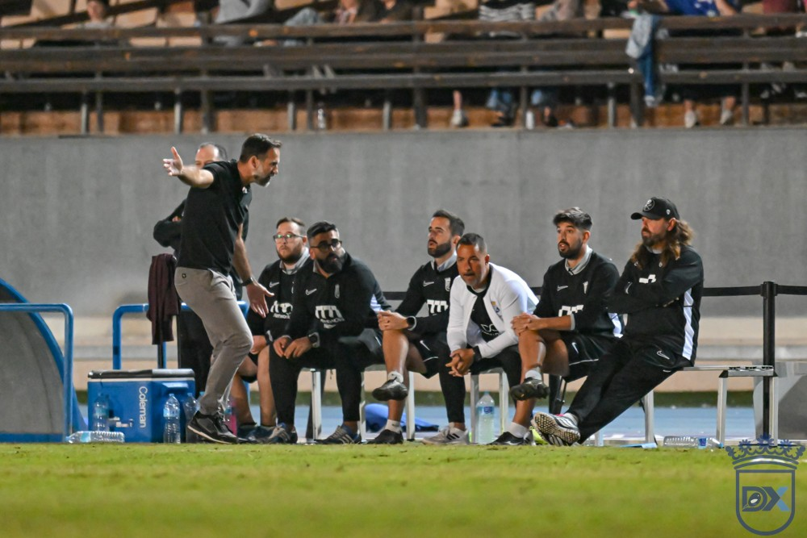

El lavado de cara del Xerez: Segovia empieza a darle personalidad

Foto: Diario XerecistaCuatro jornadas después de la llegada de Abel Segovia, el Xerez CD es otro equipo. Ha pasado de sumar 2 puntos en las cuatro primeras jornadas a sumar 7 en las cuatro siguientes, y sobre todo ha recuperado algo que había perdido: una forma reconocible de jugar.
De "sin personalidad" a un equipo reconocible
La etapa de Xavi Molist terminó con dos empates, dos derrotas y un solo gol a favor. La derrota en Huelva, que precipitó su cese, dejó la imagen de un equipo sin ideas y sin personalidad. Segovia llegó con el equipo hundido en la tabla y sin margen para adaptarse.
Su estreno fue atípico. Ante el Tenerife B tuvo que ver el partido desde la grada, porque su ficha aún no estaba tramitada, y Juan Pedro Ramos se sentó en el banquillo. Aun así, el equipo remontó y logró su primera victoria. Ya se vieron algunos de los cambios: laterales que dan amplitud y extremos que se meten por dentro para buscar el uno contra uno.
Presión, transiciones y carácter en Chapín
En Sevilla, ante el Betis Deportivo, el Xerez fue el primer equipo que le marcó un gol al líder, con presión adelantada, robos y transiciones rápidas. El cansancio le costó la victoria al final. Ante el Ciudad de Lucena dominó de principio a fin y estrelló dos balones en el larguero, pero perdió con un gol en el minuto 89. Ante el Marbella sufrió en el primer tiempo, pero Segovia movió el banquillo en el descanso y el cambio de Ismael le dio la victoria.
El balance con Segovia es de 7 puntos de 12, cuatro goles a favor y tres en contra. El equipo ha salido del descenso directo y el propio técnico lo resume así: el equipo "tiene una identidad".
La asignatura pendiente: el gol
El lavado de cara todavía no está completo. El Xerez lleva cinco goles en ocho jornadas, la segunda cifra más baja del grupo, y el propio Segovia reconoce que al equipo le falta finalizar las ocasiones que genera. Con la personalidad recuperada, el siguiente paso es que esa mejoría se vea en el marcador para empezar a mirar hacia arriba.
🇬🇧 Read in English ← Volver a la portada